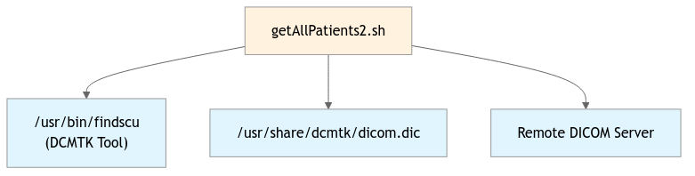

getAllPatients2.sh
This script retrieves DICOM patient study information from a remote DICOM Query/Retrieve SCP server using the findscu command. It can pull data for a specified number of days (default 7000) and optionally filter by institution name. The script handles large datasets by implementing fallback strategies including date-based queries and patient ID pattern matching when bulk queries fail. Results are stored as individual DICOM files in organized directory structures under /tmp/allPatients[InstitutionName]
Related Files
Data Flow Diagram
![flowchart TD
A["Command Line Arguments<br>(numberOfDays, InstitutionName)"] --> B["getAllPatients2.sh"]
C["Remote DICOM Server"] --> B
D["/usr/share/dcmtk/dicom.dic"] --> B
B --> E["/tmp/allPatients[InstitutionName]/<br>(Output Directory)"]
E --> F["/tmp/allPatients[InstitutionName]/all_at_once/<br>(Institution-specific queries)"]
E --> G["/tmp/allPatients[InstitutionName]/YYYYMMDD/<br>(Date-based queries)"]
E --> H["/tmp/allPatients[InstitutionName]/YYYYMMDD_[A-Z0-9]/<br>(Pattern-based fallback)"]
%% Styling
classDef inputFile fill:#e1f5fe
classDef outputFile fill:#f3e5f5
classDef mainScript fill:#fff3e0
class A,C,D inputFile
class B mainScript
class E,F,G,H outputFile](../../_images/mermaid-82a41fd41e1df4290ce35672c731ed24becb5458.png)
Data pths
- Input Paths:
/usr/share/dcmtk/dicom.dic
- Output Paths:
/tmp/allPatients[InstitutionName]/- Main output directory/tmp/allPatients[InstitutionName]/all_at_once//tmp/allPatients[InstitutionName]/YYYYMMDD//tmp/allPatients[InstitutionName]/YYYYMMDD_[pattern]/
Script docstring starts here —>>> –>> –>>
We can provide an argument to this program, the maximum number of days we would like to pull. In general we might get away with a very short period because new scans will come in as recent scans. But some test data migth be very old. So we should do one long run at night and short runs during the day.
As a second argument allow a specific project name. The whole things takes too long right now. Treat some project as special here.